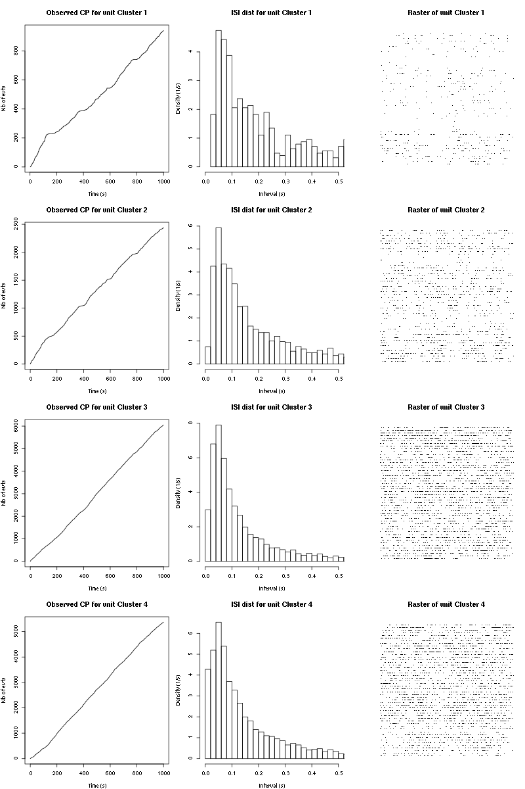

Sorting data set 20000616 tetrode C (channels 9, 11, 13, 16)
Table of Contents
- 1. Introduction
- 2. Tetrode D (channels 9, 11, 13, 16) analysis
- 2.1. Loading the data
- 2.2. Five number summary
- 2.3. Plot the data
- 2.4. Data normalization
- 2.5. Spike detection
- 2.6. Cuts
- 2.7. Events
- 2.8. Removing obvious superposition
- 2.9. Dimension reduction
- 2.10. Exporting for
GGobi - 2.11. kmeans clustering with 5
- 2.12. Long cuts creation
- 2.13. Peeling
- 2.14. Getting the spike trains
- 2.15. Getting the inter spike intervals and the forward and backward recurrence times
- 2.16. Testing
all_at_once
- 3. Analyzing a sequence of trials
- 4. Systematic analysis of the 50 trials with "pure"
Cis-3-Hexen-1-ol - 5. The second minute of spontaneous activity recording
- 6. The third minute of spontaneous activity recording
- 7. 30 remaining trials with
Cis-3-Hexen-1-oldiluted 100 times - 8. 50 trials with
Cis-3-hexen-1-oldiluted 10 times
1 Introduction
This is the description of how to do the (spike) sorting of tetrode C (channels 9, 11, 13, 16) from data set locust20000616.
1.1 Getting the data
The data are in file locust20000616.hdf5 located on zenodo and can be downloaded interactivelly with a web browser or by typing at the command line:
wget https://zenodo.org/record/21589/files/locust20000616.hdf5
In the sequel I will assume that R has been started in the directory where the data were downloaded (in other words, the working direcory should be the one containing the data.
The data are in HDF5 format and the easiest way to get them into R is to install the rhdf5 package from Bioconductor. Once the installation is done, the library is loaded into R with:
library(rhdf5)
We can then get a (long and detailed) listing of our data file content with (result not shown):
h5ls("locust20000616.hdf5")
We can get the content of LabBook metadata from the shell with:
h5dump -a "LabBook" locust20000616.hdf5
1.2 Getting the code
The code can be sourced as follows:
source("https://raw.githubusercontent.com/christophe-pouzat/zenodo-locust-datasets-analysis/master/R_Sorting_Code/sorting_with_r.R")
2 Tetrode D (channels 9, 11, 13, 16) analysis
We now want to get our "model", that is a dictionnary of waveforms (one waveform per neuron and per recording site). To that end we are going to use trial_01 (20 s of data) contained in the Cis-3-Hexen-1-ol (10^-0) first Group (in HDF5 jargon).
2.1 Loading the data
So we start by loading the data from channels 9, 11, 13, 16 into R, using the 60 s of data contained in Spontaneous first:
lD = rbind(cbind(h5read("locust20000616.hdf5", "/Spontaneous first/ch09"),
h5read("locust20000616.hdf5", "/Spontaneous first/ch11"),
h5read("locust20000616.hdf5", "/Spontaneous first/ch13"),
h5read("locust20000616.hdf5", "/Spontaneous first/ch16")))
dim(lD)
| 892858 |
| 4 |
2.2 Five number summary
We get the Five number summary with:
summary(lD,digits=2)
| Min. :1432 | Min. :1646 | Min. :1518 | Min. :1630 |
| 1st Qu.:2013 | 1st Qu.:2016 | 1st Qu.:2013 | 1st Qu.:2003 |
| Median :2050 | Median :2050 | Median :2050 | Median :2050 |
| Mean :2049 | Mean :2049 | Mean :2049 | Mean :2049 |
| 3rd Qu.:2086 | 3rd Qu.:2083 | 3rd Qu.:2087 | 3rd Qu.:2095 |
| Max. :2508 | Max. :2362 | Max. :2398 | Max. :2388 |
The minimum is on the first channel. This suggests that the largest spikes are going to be found here (remember that spikes are going mainly downwards).
2.3 Plot the data
We "convert" the data matrix lD into a time series object with:
lD = ts(lD,start=0,freq=15e3)
We can then plot the whole data with (not shown since it makes a very figure):
plot(lD)
2.4 Data normalization
As always we normalize such that the median absolute deviation (MAD) becomes 1:
lD.mad = apply(lD,2,mad) lD = t((t(lD)-apply(lD,2,median))/lD.mad) lD = ts(lD,start=0,freq=15e3)
Once this is done we explore interactively the data with:
explore(lD,col=c("black","grey70"))
There are many neurons. The signal to noise ratio is OK.
2.5 Spike detection
Since the spikes are mainly going downwards, we will detect valleys instead of peaks:
lDf = -lD filter_length = 3 threshold_factor = 4 lDf = filter(lDf,rep(1,filter_length)/filter_length) lDf[is.na(lDf)] = 0 lDf.mad = apply(lDf,2,mad) lDf_mad_original = lDf.mad lDf = t(t(lDf)/lDf_mad_original) thrs = threshold_factor*c(1,1,1,1) bellow.thrs = t(t(lDf) < thrs) lDfr = lDf lDfr[bellow.thrs] = 0 remove(lDf) sp0 = peaks(apply(lDfr,1,sum),15) remove(lDfr) sp0
eventsPos object with indexes of 1444 events. Mean inter event interval: 618.21 sampling points, corresponding SD: 686.65 sampling points Smallest and largest inter event intervals: 18 and 7814 sampling points.
Every time a filter length / threshold combination is tried, the detection is checked interactively with:
explore(sp0,lD,col=c("black","grey50"))
2.6 Cuts
We proceed as usual to get the cut length right:
evts = mkEvents(sp0,lD,49,50)
evts.med = median(evts)
evts.mad = apply(evts,1,mad)
plot_range = range(c(evts.med,evts.mad))
plot(evts.med,type="n",ylab="Amplitude",
ylim=plot_range)
abline(v=seq(0,400,10),col="grey")
abline(h=c(0,1),col="grey")
lines(evts.med,lwd=2)
lines(evts.mad,col=2,lwd=2)

Figure 1: Setting the cut length for the data from tetrode C (channels 9, 11, 13, 16). We see that we need 20 points before the peak and 20 after.
We see that we need roughly 20 points before the peak and 20 after.
2.7 Events
We now cut our events:
evts = mkEvents(sp0,lD,19,20) summary(evts)
events object deriving from data set: lD. Events defined as cuts of 40 sampling points on each of the 4 recording sites. The 'reference' time of each event is located at point 20 of the cut. There are 1444 events in the object.
We can as usual visualize the first 200 events with:
evts[,1:200]
Figure 2: First 200 events for the data from tetrode C (channels 1, 3, 5, 7).
There are few superposition and the best way to detect them without excluding good events seems to look for too large negative deviations on both sides of the central valley.
2.8 Removing obvious superposition
We define function goodEvtsFct with:
goodEvtsFct = function(samp,thr=3) {
samp.med = apply(samp,1,median)
samp.mad = apply(samp,1,mad)
under <- samp.med < 0
samp.r <- apply(samp,2,function(x) {x[under] <- 0;x})
apply(samp.r,2,function(x) all(x-samp.med > -thr*samp.mad))
}
We apply it with a threshold of 4 times the MAD:
goodEvts = goodEvtsFct(evts,4)
If we look at all the remaining "good" events with (not shown):
evts[,goodEvts]
and at all the "bad" ones (not shown):
evts[,!goodEvts]
we see that our sample cleaning does its job.
2.9 Dimension reduction
We do a PCA on our good events set:
evts.pc = prcomp(t(evts[,goodEvts]))
We look at the projections on the first 4 principle components:
panel.dens = function(x,...) {
usr = par("usr")
on.exit(par(usr))
par(usr = c(usr[1:2], 0, 1.5) )
d = density(x, adjust=0.5)
x = d$x
y = d$y
y = y/max(y)
lines(x, y, col="grey50", ...)
}
pairs(evts.pc$x[,1:4],pch=".",gap=0,diag.panel=panel.dens)
Figure 3: Events from tetrode C (channels 9, 10, 11, 12) projected onto the first 4 PCs.
I see at least 4/5 clusters. We can also look at the projections on the PC pairs defined by the next 4 PCs:
pairs(evts.pc$x[,5:8],pch=".",gap=0,diag.panel=panel.dens)
Figure 4: Events from tetrode C (channels 9, 10, 11, 12) projected onto PC 5 to 8.
There is not much structure left beyond the 4th PC.
2.10 Exporting for GGobi
We export the events projected onto the first 8 principle components in csv format:
write.csv(evts.pc$x[,1:8],file="tetC_evts.csv")
Using the rotation display of GGobi with the first 3 principle components and the 2D tour with the first 4 components I see 5 clusters or more (depending on the sampling jitter effect). So we will start with a kmeans with ( centers.
2.11 kmeans clustering with 5
I use here the whole waveform (for the kmeans) but nothing changes if I use evts.pc$x[,1:4] as I usually do:
nbc=5
set.seed(20110928,kind="Mersenne-Twister")
km = kmeans(t(evts[,goodEvts]),centers=nbc,iter.max=100,nstart=100)
label = km$cluster
cluster.med = sapply(1:nbc, function(cIdx) median(evts[,goodEvts][,label==cIdx]))
sizeC = sapply(1:nbc,function(cIdx) sum(abs(cluster.med[,cIdx])))
newOrder = sort.int(sizeC,decreasing=TRUE,index.return=TRUE)$ix
cluster.mad = sapply(1:nbc, function(cIdx) {ce = t(evts[,goodEvts]);ce = ce[label==cIdx,];apply(ce,2,mad)})
cluster.med = cluster.med[,newOrder]
cluster.mad = cluster.mad[,newOrder]
labelb = sapply(1:nbc, function(idx) (1:nbc)[newOrder==idx])[label]
We write a new csv file with the data and the labels:
write.csv(cbind(evts.pc$x[,1:4],labelb),file="tetC_sorted.csv")
It gives almost what was expected (one splitting ).
We get a plot showing the events attributed to each of the 5 units with:
layout(matrix(1:nbc,nr=nbc)) par(mar=c(1,1,1,1)) for (i in (1:nbc)) plot(evts[,goodEvts][,labelb==i],y.bar=5)
Figure 5: The events of five clusters of tetrode C
The events of clusters 2 and 3 look very similar (if one abstracts from the few events from cluster 1 wrongly attributed to 2), so I fuse them:
nbc=4 labelb[labelb==3]=2 labelb[labelb==4]=3 labelb[labelb==5]=4
2.12 Long cuts creation
For the peeling process we need templates that start and end at 0 (we will otherwise generate artifacts when we subtract). We proceed "as usual" with (I tried first with the default value for parameters before and after but I reduced their values after looking at the centers, see the next figure):
c_before = 49
c_after = 80
centers = lapply(1:nbc, function(i)
mk_center_list(sp0[goodEvts][labelb==i],lD,
before=c_before,after=c_after))
names(centers) = paste("Cluster",1:nbc)
We then make sure that our cuts are long enough by looking at them:
layout(matrix(1:nbc,nr=nbc))
par(mar=c(1,4,1,1))
the_range=c(min(sapply(centers,function(l) min(l$center))),
max(sapply(centers,function(l) max(l$center))))
for (i in 1:nbc) {
template = centers[[i]]$center
plot(template,lwd=2,col=2,
ylim=the_range,type="l",ylab="")
abline(h=0,col="grey50")
abline(v=(1:2)*(c_before+c_after)+1,col="grey50")
lines(filter(template,rep(1,filter_length)/filter_length),
col=1,lty=3,lwd=2)
abline(h=-threshold_factor,col="grey",lty=2,lwd=2)
lines(centers[[i]]$centerD,lwd=2,col=4)
}
Figure 6: The four templates (red) together with their first derivative (blue) all with the same scale. The dashed black curve show the templates filtered with the filter used during spike detection and the horizontal dashed grey line shows the detection threshold.
Units 1 and 2 should be reliably detected, we should miss some events from clusters 3 and 4.
2.13 Peeling
We can now do the peeling.
2.13.1 Round 0
We classify, predict, subtract and check how many non-classified events we get:
round0 = lapply(as.vector(sp0),classify_and_align_evt,
data=lD,centers=centers,
before=c_before,after=c_after)
pred0 = predict_data(round0,centers,data_length = dim(lD)[1])
lD_1 = lD - pred0
sum(sapply(round0, function(l) l[[1]] == '?'))
23
We can see the difference before / after peeling for the data between 0.9 and 1.0 s:
ii = 1:1500 + 0.9*15000
tt = ii/15000
par(mar=c(1,1,1,1))
plot(tt, lD[ii,1], axes = FALSE,
type="l",ylim=c(-50,10),
xlab="",ylab="")
lines(tt, lD_1[ii,1], col='red')
lines(tt, lD[ii,2]-15, col='black')
lines(tt, lD_1[ii,2]-15, col='red')
lines(tt, lD[ii,3]-25, col='black')
lines(tt, lD_1[ii,3]-25, col='red')
lines(tt, lD[ii,4]-40, col='black')
lines(tt, lD_1[ii,4]-40, col='red')
Figure 7: The first peeling illustrated on 100 ms of data, the raw data are in black and the first subtration in red.
2.13.2 Round 1
We keep going, using the subtracted data lD_1 as "raw data", detecting on all sites using the original MAD for normalization:
lDf = -lD_1 lDf = filter(lDf,rep(1,filter_length)/filter_length) lDf[is.na(lDf)] = 0 lDf = t(t(lDf)/lDf_mad_original) thrs = threshold_factor*c(1,1,1,1) bellow.thrs = t(t(lDf) < thrs) lDfr = lDf lDfr[bellow.thrs] = 0 remove(lDf) sp1 = peaks(apply(lDfr,1,sum),15) remove(lDfr) sp1
eventsPos object with indexes of 132 events. Mean inter event interval: 6705.77 sampling points, corresponding SD: 8439.31 sampling points Smallest and largest inter event intervals: 26 and 42503 sampling points.
We classify, predict, subtract and check how many non-classified events we get:
round1 = lapply(as.vector(sp1),classify_and_align_evt,
data=lD_1,centers=centers,
before=c_before,after=c_after)
pred1 = predict_data(round1,centers,data_length = dim(lD)[1])
lD_2 = lD_1 - pred1
sum(sapply(round1, function(l) l[[1]] == '?'))
26
We look at what's left with (not shown):
explore(sp1,lD_2,col=c("black","grey50"))
That looks fine and we stop here.
2.14 Getting the spike trains
round_all = c(round0,round1)
spike_trains = lapply(paste("Cluster",1:nbc),
function(cn) sort(sapply(round_all[sapply(round_all,
function(l) l[[1]]==cn)],
function(l) l[[2]]+l[[3]])))
names(spike_trains) = paste("Cluster",1:nbc)
2.15 Getting the inter spike intervals and the forward and backward recurrence times
2.15.1 ISI distributions
We first get the ISI (inter spike intervals) of each unit:
isi = sapply(spike_trains, diff) names(isi) = names(spike_trains)
We get the ISI ECDF for the five units with:
layout(matrix(1:(nbc+nbc %% 2),nr=ceiling(nbc/2))) par(mar=c(4,5,6,1)) for (cn in names(isi)) plot_isi(isi[[cn]],main=cn)
Figure 8: ISI ECDF for the four units.
2.15.2 Forward and Backward Recurrence Times
The forward recurrence time (FRT) between neuron A and B is the elapsed time between a spike in A and the next spike in B. The backward recurrence time (BRT) is the same thing except that we look for the former spike in B. If A and B are not correlated, the expected density of the FRT is the survival function (1-CDF) of the ISI from B divided by the mean ISI of B (the same holds for the BRT under the null hypothesis after taking the opposite). All that is correct if the data are stationary.
On the data at hand that gives:
layout_matrix = matrix(0,nr=nbc,nc=nbc)
counter = 1
for (i in 1:nbc)
for (j in 1:nbc)
if (i != j) {
layout_matrix[i,j] = counter
counter = counter +1
}
layout(layout_matrix)
par(mar=c(4,3,4,1))
for (i in 1:nbc)
for (j in 1:nbc)
if (i != j)
test_rt(spike_trains[[i]],
spike_trains[[j]],
ylab="",main=paste("Units",i,"and",j))
Figure 9: Graphical tests of the Backward and Forward Reccurrence Times distrution agaisnt the null hypothesis (no interaction). If the null is correct, the curves should be IID draws from a standard normal distribution.
2.16 Testing all_at_once
We test the function with:
## We need again an un-normalized version of the data
ref_data = rbind(cbind(h5read("locust20000616.hdf5", "/Spontaneous first/ch09"),
h5read("locust20000616.hdf5", "/Spontaneous first/ch11"),
h5read("locust20000616.hdf5", "/Spontaneous first/ch13"),
h5read("locust20000616.hdf5", "/Spontaneous first/ch16")))
## We can now use our function
aao=all_at_once(data=ref_data, centers, thres=threshold_factor*c(1,1,1,1),
filter_length_1=filter_length, filter_length=filter_length,
minimalDist_1=15, minimalDist=15,
before=c_before, after=c_after,
detection_cycle=c(0,0), verbose=2)
The five number summary is:
V1 V2 V3 V4
Min. :1432 Min. :1646 Min. :1518 Min. :1630
1st Qu.:2013 1st Qu.:2016 1st Qu.:2013 1st Qu.:2003
Median :2050 Median :2050 Median :2050 Median :2050
Mean :2049 Mean :2049 Mean :2049 Mean :2049
3rd Qu.:2086 3rd Qu.:2083 3rd Qu.:2087 3rd Qu.:2095
Max. :2508 Max. :2362 Max. :2398 Max. :2388
Doing now round 0 detecting on all sites
Total Cluster 1 Cluster 2 Cluster 3 Cluster 4 ?
1443 284 411 285 440 23
Doing now round 1 detecting on all sites
Total Cluster 1 Cluster 2 Cluster 3 Cluster 4 ?
132 3 0 9 94 26
Global counts at classification's end:
Total Cluster 1 Cluster 2 Cluster 3 Cluster 4 ?
1564 287 411 294 534 38
We see that we are getting back the numbers we obtained before step by step.
We can compare the "old" and "new" centers with (not shown):
layout(matrix(1:nbc,nr=nbc))
par(mar=c(1,4,1,1))
for (i in 1:nbc) {
plot(centers[[i]]$center,lwd=2,col=2,
ylim=the_range,type="l")
abline(h=0,col="grey50")
abline(v=(c_before+c_after)+1,col="grey50")
lines(aao$centers[[i]]$center,lwd=1,col=4)
}
They are not exactly identical since the new version is computed with all events (superposed or not) attributed to each neuron.
3 Analyzing a sequence of trials
3.1 Create directories were results get saved
We will carry out an analysis of sequences of many trials with a given odor. At the end of the analysis of the sequence we will save some intermediate R object in a directory we are now creating.:
if (!dir.exists("tetC_analysis"))
dir.create("tetC_analysis")
We will moreover save the individual spike trains in text format in a directory:
if (!dir.exists("locust20000616_spike_trains"))
dir.create("locust20000616_spike_trains")
3.2 Define a "taylored" version of sort_many_trials
In order to save space and to avoid typos, we define next a taylored version of sort_many_trials:
smt = function(stim_name,
trial_nbs,
centers,
counts) {
sort_many_trials(inter_trial_time=20*15000,
get_data_fct=function(i,s)
get_data(i,s,
channels = c("ch09","ch11","ch13","ch16"),
file="locust20000616.hdf5"),
stim_name=stim_name,
trial_nbs=trial_nbs,
centers=centers,
counts=counts,
all_at_once_call_list=list(thres=threshold_factor*c(1,1,1,1),
filter_length_1=filter_length, filter_length=filter_length,
minimalDist_1=15, minimalDist=15,
before=c_before, after=c_after,
detection_cycle=c(0,0), verbose=1),
layout_matrix=matrix(c(1,1:5),nr=3),new_weight_in_update=0.01
)
}
4 Systematic analysis of the 50 trials with "pure" Cis-3-Hexen-1-ol
4.1 Doing the job
a_Cis_3_Hexen_1_ol_0_tetC=smt(stim_name="Cis-3-Hexen-1-ol (10^-0)",
trial_nbs=1:50,
centers=aao$centers,
counts=aao$counts)
***************
Doing now trial 1 of Cis-3-Hexen-1-ol (10^-0)
The five number summary is:
ch09 ch11 ch13 ch16
Min. :1391 Min. :1600 Min. :1602 Min. :1663
1st Qu.:2013 1st Qu.:2016 1st Qu.:2013 1st Qu.:2003
Median :2050 Median :2050 Median :2050 Median :2050
Mean :2049 Mean :2049 Mean :2049 Mean :2049
3rd Qu.:2086 3rd Qu.:2083 3rd Qu.:2087 3rd Qu.:2095
Max. :2567 Max. :2391 Max. :2442 Max. :2391
Global counts at classification's end:
Total Cluster 1 Cluster 2 Cluster 3 Cluster 4 ?
515 69 132 112 182 20
Trial 1 done!
******************
***************
Doing now trial 2 of Cis-3-Hexen-1-ol (10^-0)
The five number summary is:
ch09 ch11 ch13 ch16
Min. :1470 Min. :1666 Min. :1604 Min. :1664
1st Qu.:2013 1st Qu.:2016 1st Qu.:2013 1st Qu.:2003
Median :2050 Median :2050 Median :2050 Median :2050
Mean :2049 Mean :2049 Mean :2049 Mean :2049
3rd Qu.:2086 3rd Qu.:2083 3rd Qu.:2086 3rd Qu.:2095
Max. :2461 Max. :2347 Max. :2374 Max. :2360
Global counts at classification's end:
Total Cluster 1 Cluster 2 Cluster 3 Cluster 4 ?
467 64 102 110 170 21
Trial 2 done!
******************
***************
Doing now trial 3 of Cis-3-Hexen-1-ol (10^-0)
The five number summary is:
ch09 ch11 ch13 ch16
Min. :1361 Min. :1672 Min. :1644 Min. :1650
1st Qu.:2013 1st Qu.:2016 1st Qu.:2013 1st Qu.:2003
Median :2050 Median :2050 Median :2050 Median :2049
Mean :2049 Mean :2049 Mean :2049 Mean :2049
3rd Qu.:2086 3rd Qu.:2083 3rd Qu.:2087 3rd Qu.:2095
Max. :2435 Max. :2369 Max. :2355 Max. :2392
Global counts at classification's end:
Total Cluster 1 Cluster 2 Cluster 3 Cluster 4 ?
472 107 96 93 166 10
Trial 3 done!
******************
***************
Doing now trial 4 of Cis-3-Hexen-1-ol (10^-0)
The five number summary is:
ch09 ch11 ch13 ch16
Min. :1480 Min. :1610 Min. :1550 Min. :1625
1st Qu.:2013 1st Qu.:2016 1st Qu.:2013 1st Qu.:2003
Median :2050 Median :2050 Median :2051 Median :2050
Mean :2049 Mean :2049 Mean :2049 Mean :2049
3rd Qu.:2086 3rd Qu.:2083 3rd Qu.:2087 3rd Qu.:2095
Max. :2493 Max. :2372 Max. :2371 Max. :2382
Global counts at classification's end:
Total Cluster 1 Cluster 2 Cluster 3 Cluster 4 ?
470 85 112 92 153 28
Trial 4 done!
******************
***************
Doing now trial 5 of Cis-3-Hexen-1-ol (10^-0)
The five number summary is:
ch09 ch11 ch13 ch16
Min. :1476 Min. :1685 Min. :1663 Min. :1636
1st Qu.:2013 1st Qu.:2016 1st Qu.:2013 1st Qu.:2003
Median :2050 Median :2050 Median :2050 Median :2050
Mean :2049 Mean :2049 Mean :2049 Mean :2049
3rd Qu.:2086 3rd Qu.:2083 3rd Qu.:2087 3rd Qu.:2095
Max. :2505 Max. :2350 Max. :2349 Max. :2373
Global counts at classification's end:
Total Cluster 1 Cluster 2 Cluster 3 Cluster 4 ?
464 70 130 103 136 25
Trial 5 done!
******************
***************
Doing now trial 6 of Cis-3-Hexen-1-ol (10^-0)
The five number summary is:
ch09 ch11 ch13 ch16
Min. :1486 Min. :1659 Min. :1614 Min. :1655
1st Qu.:2013 1st Qu.:2016 1st Qu.:2013 1st Qu.:2003
Median :2050 Median :2050 Median :2050 Median :2050
Mean :2049 Mean :2049 Mean :2049 Mean :2049
3rd Qu.:2085 3rd Qu.:2083 3rd Qu.:2086 3rd Qu.:2095
Max. :2560 Max. :2374 Max. :2455 Max. :2399
Global counts at classification's end:
Total Cluster 1 Cluster 2 Cluster 3 Cluster 4 ?
430 60 133 87 136 14
Trial 6 done!
******************
***************
Doing now trial 7 of Cis-3-Hexen-1-ol (10^-0)
The five number summary is:
ch09 ch11 ch13 ch16
Min. :1467 Min. :1687 Min. :1646 Min. :1659
1st Qu.:2013 1st Qu.:2016 1st Qu.:2013 1st Qu.:2003
Median :2050 Median :2050 Median :2050 Median :2050
Mean :2049 Mean :2049 Mean :2049 Mean :2049
3rd Qu.:2086 3rd Qu.:2083 3rd Qu.:2087 3rd Qu.:2095
Max. :2468 Max. :2358 Max. :2361 Max. :2374
Global counts at classification's end:
Total Cluster 1 Cluster 2 Cluster 3 Cluster 4 ?
470 111 98 84 159 18
Trial 7 done!
******************
***************
Doing now trial 8 of Cis-3-Hexen-1-ol (10^-0)
The five number summary is:
ch09 ch11 ch13 ch16
Min. :1507 Min. :1654 Min. :1675 Min. :1633
1st Qu.:2013 1st Qu.:2016 1st Qu.:2013 1st Qu.:2003
Median :2050 Median :2050 Median :2050 Median :2050
Mean :2049 Mean :2049 Mean :2049 Mean :2049
3rd Qu.:2086 3rd Qu.:2083 3rd Qu.:2087 3rd Qu.:2095
Max. :2465 Max. :2393 Max. :2381 Max. :2368
Global counts at classification's end:
Total Cluster 1 Cluster 2 Cluster 3 Cluster 4 ?
488 66 131 105 157 29
Trial 8 done!
******************
***************
Doing now trial 9 of Cis-3-Hexen-1-ol (10^-0)
The five number summary is:
ch09 ch11 ch13 ch16
Min. :1503 Min. :1607 Min. :1649 Min. :1647
1st Qu.:2013 1st Qu.:2016 1st Qu.:2013 1st Qu.:2003
Median :2050 Median :2050 Median :2050 Median :2050
Mean :2049 Mean :2049 Mean :2049 Mean :2049
3rd Qu.:2085 3rd Qu.:2083 3rd Qu.:2087 3rd Qu.:2095
Max. :2531 Max. :2394 Max. :2363 Max. :2364
Global counts at classification's end:
Total Cluster 1 Cluster 2 Cluster 3 Cluster 4 ?
467 63 118 123 144 19
Trial 9 done!
******************
***************
Doing now trial 10 of Cis-3-Hexen-1-ol (10^-0)
The five number summary is:
ch09 ch11 ch13 ch16
Min. :1460 Min. :1687 Min. :1649 Min. :1607
1st Qu.:2013 1st Qu.:2016 1st Qu.:2013 1st Qu.:2003
Median :2050 Median :2050 Median :2050 Median :2050
Mean :2049 Mean :2049 Mean :2049 Mean :2049
3rd Qu.:2085 3rd Qu.:2083 3rd Qu.:2086 3rd Qu.:2095
Max. :2500 Max. :2374 Max. :2379 Max. :2401
Global counts at classification's end:
Total Cluster 1 Cluster 2 Cluster 3 Cluster 4 ?
398 69 76 109 125 19
Trial 10 done!
******************
***************
Doing now trial 11 of Cis-3-Hexen-1-ol (10^-0)
The five number summary is:
ch09 ch11 ch13 ch16
Min. :1505 Min. :1669 Min. :1661 Min. :1640
1st Qu.:2013 1st Qu.:2016 1st Qu.:2013 1st Qu.:2003
Median :2050 Median :2050 Median :2050 Median :2050
Mean :2049 Mean :2049 Mean :2049 Mean :2049
3rd Qu.:2085 3rd Qu.:2083 3rd Qu.:2086 3rd Qu.:2095
Max. :2459 Max. :2365 Max. :2360 Max. :2382
Global counts at classification's end:
Total Cluster 1 Cluster 2 Cluster 3 Cluster 4 ?
407 90 72 110 115 20
Trial 11 done!
******************
***************
Doing now trial 12 of Cis-3-Hexen-1-ol (10^-0)
The five number summary is:
ch09 ch11 ch13 ch16
Min. :1490 Min. :1702 Min. :1661 Min. :1651
1st Qu.:2013 1st Qu.:2016 1st Qu.:2013 1st Qu.:2003
Median :2050 Median :2050 Median :2050 Median :2050
Mean :2049 Mean :2049 Mean :2049 Mean :2049
3rd Qu.:2085 3rd Qu.:2083 3rd Qu.:2086 3rd Qu.:2095
Max. :2550 Max. :2410 Max. :2354 Max. :2379
Global counts at classification's end:
Total Cluster 1 Cluster 2 Cluster 3 Cluster 4 ?
410 72 89 97 126 26
Trial 12 done!
******************
***************
Doing now trial 13 of Cis-3-Hexen-1-ol (10^-0)
The five number summary is:
ch09 ch11 ch13 ch16
Min. :1501 Min. :1529 Min. :1640 Min. :1638
1st Qu.:2013 1st Qu.:2016 1st Qu.:2013 1st Qu.:2003
Median :2050 Median :2050 Median :2050 Median :2050
Mean :2049 Mean :2049 Mean :2049 Mean :2049
3rd Qu.:2085 3rd Qu.:2083 3rd Qu.:2087 3rd Qu.:2095
Max. :2430 Max. :2386 Max. :2413 Max. :2404
Global counts at classification's end:
Total Cluster 1 Cluster 2 Cluster 3 Cluster 4 ?
436 80 67 118 154 17
Trial 13 done!
******************
***************
Doing now trial 14 of Cis-3-Hexen-1-ol (10^-0)
The five number summary is:
ch09 ch11 ch13 ch16
Min. :1496 Min. :1642 Min. :1623 Min. :1623
1st Qu.:2013 1st Qu.:2016 1st Qu.:2013 1st Qu.:2003
Median :2050 Median :2050 Median :2050 Median :2050
Mean :2049 Mean :2049 Mean :2049 Mean :2049
3rd Qu.:2085 3rd Qu.:2083 3rd Qu.:2086 3rd Qu.:2095
Max. :2472 Max. :2360 Max. :2347 Max. :2425
Global counts at classification's end:
Total Cluster 1 Cluster 2 Cluster 3 Cluster 4 ?
410 57 95 105 128 25
Trial 14 done!
******************
***************
Doing now trial 15 of Cis-3-Hexen-1-ol (10^-0)
The five number summary is:
ch09 ch11 ch13 ch16
Min. :1480 Min. :1571 Min. :1656 Min. :1631
1st Qu.:2013 1st Qu.:2016 1st Qu.:2013 1st Qu.:2003
Median :2050 Median :2050 Median :2050 Median :2050
Mean :2049 Mean :2049 Mean :2049 Mean :2049
3rd Qu.:2085 3rd Qu.:2083 3rd Qu.:2087 3rd Qu.:2095
Max. :2459 Max. :2432 Max. :2385 Max. :2411
Global counts at classification's end:
Total Cluster 1 Cluster 2 Cluster 3 Cluster 4 ?
465 85 122 110 123 25
Trial 15 done!
******************
***************
Doing now trial 16 of Cis-3-Hexen-1-ol (10^-0)
The five number summary is:
ch09 ch11 ch13 ch16
Min. :1493 Min. :1620 Min. :1649 Min. :1682
1st Qu.:2013 1st Qu.:2016 1st Qu.:2013 1st Qu.:2003
Median :2050 Median :2050 Median :2050 Median :2050
Mean :2049 Mean :2049 Mean :2049 Mean :2049
3rd Qu.:2085 3rd Qu.:2083 3rd Qu.:2087 3rd Qu.:2095
Max. :2431 Max. :2356 Max. :2349 Max. :2383
Global counts at classification's end:
Total Cluster 1 Cluster 2 Cluster 3 Cluster 4 ?
456 80 107 110 137 22
Trial 16 done!
******************
***************
Doing now trial 17 of Cis-3-Hexen-1-ol (10^-0)
The five number summary is:
ch09 ch11 ch13 ch16
Min. :1444 Min. :1692 Min. :1673 Min. :1595
1st Qu.:2013 1st Qu.:2016 1st Qu.:2013 1st Qu.:2003
Median :2050 Median :2050 Median :2050 Median :2050
Mean :2049 Mean :2049 Mean :2049 Mean :2049
3rd Qu.:2085 3rd Qu.:2083 3rd Qu.:2086 3rd Qu.:2095
Max. :2523 Max. :2337 Max. :2342 Max. :2396
Global counts at classification's end:
Total Cluster 1 Cluster 2 Cluster 3 Cluster 4 ?
442 77 119 92 129 25
Trial 17 done!
******************
***************
Doing now trial 18 of Cis-3-Hexen-1-ol (10^-0)
The five number summary is:
ch09 ch11 ch13 ch16
Min. :1460 Min. :1616 Min. :1585 Min. :1596
1st Qu.:2013 1st Qu.:2016 1st Qu.:2013 1st Qu.:2003
Median :2050 Median :2050 Median :2050 Median :2050
Mean :2049 Mean :2049 Mean :2049 Mean :2049
3rd Qu.:2085 3rd Qu.:2083 3rd Qu.:2087 3rd Qu.:2095
Max. :2439 Max. :2346 Max. :2394 Max. :2381
Global counts at classification's end:
Total Cluster 1 Cluster 2 Cluster 3 Cluster 4 ?
447 74 108 117 115 33
Trial 18 done!
******************
***************
Doing now trial 19 of Cis-3-Hexen-1-ol (10^-0)
The five number summary is:
ch09 ch11 ch13 ch16
Min. :1484 Min. :1675 Min. :1679 Min. :1665
1st Qu.:2013 1st Qu.:2016 1st Qu.:2013 1st Qu.:2003
Median :2050 Median :2050 Median :2050 Median :2049
Mean :2049 Mean :2049 Mean :2049 Mean :2049
3rd Qu.:2085 3rd Qu.:2083 3rd Qu.:2086 3rd Qu.:2094
Max. :2441 Max. :2357 Max. :2346 Max. :2413
Global counts at classification's end:
Total Cluster 1 Cluster 2 Cluster 3 Cluster 4 ?
410 50 114 109 125 12
Trial 19 done!
******************
***************
Doing now trial 20 of Cis-3-Hexen-1-ol (10^-0)
The five number summary is:
ch09 ch11 ch13 ch16
Min. :1483 Min. :1687 Min. :1692 Min. :1629
1st Qu.:2013 1st Qu.:2016 1st Qu.:2013 1st Qu.:2003
Median :2050 Median :2050 Median :2051 Median :2050
Mean :2049 Mean :2049 Mean :2049 Mean :2049
3rd Qu.:2085 3rd Qu.:2083 3rd Qu.:2086 3rd Qu.:2095
Max. :2449 Max. :2380 Max. :2370 Max. :2393
Global counts at classification's end:
Total Cluster 1 Cluster 2 Cluster 3 Cluster 4 ?
437 77 121 97 118 24
Trial 20 done!
******************
***************
Doing now trial 21 of Cis-3-Hexen-1-ol (10^-0)
The five number summary is:
ch09 ch11 ch13 ch16
Min. :1500 Min. :1683 Min. :1687 Min. :1623
1st Qu.:2014 1st Qu.:2016 1st Qu.:2013 1st Qu.:2003
Median :2050 Median :2050 Median :2050 Median :2049
Mean :2049 Mean :2049 Mean :2049 Mean :2049
3rd Qu.:2085 3rd Qu.:2083 3rd Qu.:2086 3rd Qu.:2095
Max. :2447 Max. :2337 Max. :2348 Max. :2381
Global counts at classification's end:
Total Cluster 1 Cluster 2 Cluster 3 Cluster 4 ?
361 84 47 99 110 21
Trial 21 done!
******************
***************
Doing now trial 22 of Cis-3-Hexen-1-ol (10^-0)
The five number summary is:
ch09 ch11 ch13 ch16
Min. :1478 Min. :1662 Min. :1674 Min. :1617
1st Qu.:2013 1st Qu.:2015 1st Qu.:2013 1st Qu.:2003
Median :2050 Median :2050 Median :2051 Median :2050
Mean :2049 Mean :2049 Mean :2049 Mean :2049
3rd Qu.:2086 3rd Qu.:2084 3rd Qu.:2087 3rd Qu.:2095
Max. :2555 Max. :2358 Max. :2358 Max. :2410
Global counts at classification's end:
Total Cluster 1 Cluster 2 Cluster 3 Cluster 4 ?
496 69 163 116 119 29
Trial 22 done!
******************
***************
Doing now trial 23 of Cis-3-Hexen-1-ol (10^-0)
The five number summary is:
ch09 ch11 ch13 ch16
Min. :1510 Min. :1628 Min. :1659 Min. :1557
1st Qu.:2013 1st Qu.:2016 1st Qu.:2013 1st Qu.:2003
Median :2050 Median :2050 Median :2050 Median :2050
Mean :2049 Mean :2049 Mean :2049 Mean :2049
3rd Qu.:2085 3rd Qu.:2083 3rd Qu.:2086 3rd Qu.:2095
Max. :2459 Max. :2359 Max. :2349 Max. :2393
Global counts at classification's end:
Total Cluster 1 Cluster 2 Cluster 3 Cluster 4 ?
418 67 112 110 111 18
Trial 23 done!
******************
***************
Doing now trial 24 of Cis-3-Hexen-1-ol (10^-0)
The five number summary is:
ch09 ch11 ch13 ch16
Min. :1431 Min. :1620 Min. :1527 Min. :1542
1st Qu.:2013 1st Qu.:2016 1st Qu.:2013 1st Qu.:2003
Median :2050 Median :2050 Median :2050 Median :2050
Mean :2049 Mean :2049 Mean :2049 Mean :2049
3rd Qu.:2085 3rd Qu.:2083 3rd Qu.:2087 3rd Qu.:2095
Max. :2485 Max. :2363 Max. :2360 Max. :2415
Global counts at classification's end:
Total Cluster 1 Cluster 2 Cluster 3 Cluster 4 ?
472 84 102 132 125 29
Trial 24 done!
******************
***************
Doing now trial 25 of Cis-3-Hexen-1-ol (10^-0)
The five number summary is:
ch09 ch11 ch13 ch16
Min. :1515 Min. :1553 Min. :1651 Min. :1585
1st Qu.:2014 1st Qu.:2016 1st Qu.:2013 1st Qu.:2004
Median :2050 Median :2050 Median :2050 Median :2050
Mean :2049 Mean :2049 Mean :2049 Mean :2049
3rd Qu.:2085 3rd Qu.:2083 3rd Qu.:2086 3rd Qu.:2094
Max. :2439 Max. :2356 Max. :2346 Max. :2390
Global counts at classification's end:
Total Cluster 1 Cluster 2 Cluster 3 Cluster 4 ?
387 74 58 113 117 25
Trial 25 done!
******************
***************
Doing now trial 26 of Cis-3-Hexen-1-ol (10^-0)
The five number summary is:
ch09 ch11 ch13 ch16
Min. :1519 Min. :1681 Min. :1704 Min. :1618
1st Qu.:2013 1st Qu.:2016 1st Qu.:2013 1st Qu.:2003
Median :2050 Median :2050 Median :2050 Median :2050
Mean :2049 Mean :2049 Mean :2049 Mean :2049
3rd Qu.:2085 3rd Qu.:2083 3rd Qu.:2086 3rd Qu.:2095
Max. :2458 Max. :2436 Max. :2352 Max. :2401
Global counts at classification's end:
Total Cluster 1 Cluster 2 Cluster 3 Cluster 4 ?
434 63 105 121 120 25
Trial 26 done!
******************
***************
Doing now trial 27 of Cis-3-Hexen-1-ol (10^-0)
The five number summary is:
ch09 ch11 ch13 ch16
Min. :1393 Min. :1683 Min. :1660 Min. :1622
1st Qu.:2013 1st Qu.:2016 1st Qu.:2013 1st Qu.:2003
Median :2050 Median :2050 Median :2050 Median :2050
Mean :2049 Mean :2049 Mean :2049 Mean :2049
3rd Qu.:2085 3rd Qu.:2083 3rd Qu.:2086 3rd Qu.:2095
Max. :2490 Max. :2338 Max. :2365 Max. :2410
Global counts at classification's end:
Total Cluster 1 Cluster 2 Cluster 3 Cluster 4 ?
469 86 76 121 152 34
Trial 27 done!
******************
***************
Doing now trial 28 of Cis-3-Hexen-1-ol (10^-0)
The five number summary is:
ch09 ch11 ch13 ch16
Min. :1522 Min. :1619 Min. :1691 Min. :1588
1st Qu.:2013 1st Qu.:2016 1st Qu.:2013 1st Qu.:2003
Median :2050 Median :2050 Median :2050 Median :2050
Mean :2049 Mean :2049 Mean :2049 Mean :2049
3rd Qu.:2085 3rd Qu.:2083 3rd Qu.:2086 3rd Qu.:2095
Max. :2500 Max. :2351 Max. :2377 Max. :2411
Global counts at classification's end:
Total Cluster 1 Cluster 2 Cluster 3 Cluster 4 ?
470 51 113 118 164 24
Trial 28 done!
******************
***************
Doing now trial 29 of Cis-3-Hexen-1-ol (10^-0)
The five number summary is:
ch09 ch11 ch13 ch16
Min. :1413 Min. :1605 Min. :1656 Min. :1556
1st Qu.:2013 1st Qu.:2016 1st Qu.:2013 1st Qu.:2003
Median :2050 Median :2050 Median :2050 Median :2050
Mean :2049 Mean :2049 Mean :2049 Mean :2049
3rd Qu.:2085 3rd Qu.:2083 3rd Qu.:2086 3rd Qu.:2095
Max. :2514 Max. :2397 Max. :2415 Max. :2418
Global counts at classification's end:
Total Cluster 1 Cluster 2 Cluster 3 Cluster 4 ?
450 82 92 107 150 19
Trial 29 done!
******************
***************
Doing now trial 30 of Cis-3-Hexen-1-ol (10^-0)
The five number summary is:
ch09 ch11 ch13 ch16
Min. :1283 Min. :1579 Min. :1602 Min. :1527
1st Qu.:2013 1st Qu.:2016 1st Qu.:2013 1st Qu.:2003
Median :2050 Median :2050 Median :2050 Median :2050
Mean :2049 Mean :2049 Mean :2049 Mean :2049
3rd Qu.:2085 3rd Qu.:2083 3rd Qu.:2086 3rd Qu.:2095
Max. :2583 Max. :2350 Max. :2357 Max. :2516
Global counts at classification's end:
Total Cluster 1 Cluster 2 Cluster 3 Cluster 4 ?
442 64 108 109 127 34
Trial 30 done!
******************
***************
Doing now trial 31 of Cis-3-Hexen-1-ol (10^-0)
The five number summary is:
ch09 ch11 ch13 ch16
Min. :1486 Min. :1589 Min. :1636 Min. :1546
1st Qu.:2013 1st Qu.:2016 1st Qu.:2013 1st Qu.:2003
Median :2050 Median :2050 Median :2050 Median :2050
Mean :2049 Mean :2049 Mean :2049 Mean :2049
3rd Qu.:2085 3rd Qu.:2083 3rd Qu.:2086 3rd Qu.:2095
Max. :2484 Max. :2349 Max. :2373 Max. :2444
Global counts at classification's end:
Total Cluster 1 Cluster 2 Cluster 3 Cluster 4 ?
442 48 138 105 126 25
Trial 31 done!
******************
***************
Doing now trial 32 of Cis-3-Hexen-1-ol (10^-0)
The five number summary is:
ch09 ch11 ch13 ch16
Min. :1336 Min. :1591 Min. :1617 Min. :1532
1st Qu.:2013 1st Qu.:2016 1st Qu.:2013 1st Qu.:2003
Median :2050 Median :2050 Median :2050 Median :2050
Mean :2049 Mean :2049 Mean :2049 Mean :2049
3rd Qu.:2085 3rd Qu.:2083 3rd Qu.:2087 3rd Qu.:2095
Max. :2492 Max. :2395 Max. :2357 Max. :2425
Global counts at classification's end:
Total Cluster 1 Cluster 2 Cluster 3 Cluster 4 ?
428 74 131 101 98 24
Trial 32 done!
******************
***************
Doing now trial 33 of Cis-3-Hexen-1-ol (10^-0)
The five number summary is:
ch09 ch11 ch13 ch16
Min. :1515 Min. :1647 Min. :1674 Min. :1615
1st Qu.:2014 1st Qu.:2016 1st Qu.:2013 1st Qu.:2003
Median :2050 Median :2050 Median :2050 Median :2050
Mean :2049 Mean :2049 Mean :2049 Mean :2049
3rd Qu.:2085 3rd Qu.:2083 3rd Qu.:2086 3rd Qu.:2095
Max. :2455 Max. :2341 Max. :2349 Max. :2378
Global counts at classification's end:
Total Cluster 1 Cluster 2 Cluster 3 Cluster 4 ?
418 58 121 92 122 25
Trial 33 done!
******************
***************
Doing now trial 34 of Cis-3-Hexen-1-ol (10^-0)
The five number summary is:
ch09 ch11 ch13 ch16
Min. :1445 Min. :1558 Min. :1598 Min. :1567
1st Qu.:2013 1st Qu.:2016 1st Qu.:2013 1st Qu.:2003
Median :2050 Median :2050 Median :2050 Median :2050
Mean :2049 Mean :2049 Mean :2049 Mean :2049
3rd Qu.:2085 3rd Qu.:2083 3rd Qu.:2086 3rd Qu.:2095
Max. :2581 Max. :2428 Max. :2365 Max. :2408
Global counts at classification's end:
Total Cluster 1 Cluster 2 Cluster 3 Cluster 4 ?
433 68 122 117 106 20
Trial 34 done!
******************
***************
Doing now trial 35 of Cis-3-Hexen-1-ol (10^-0)
The five number summary is:
ch09 ch11 ch13 ch16
Min. :1506 Min. :1614 Min. :1678 Min. :1571
1st Qu.:2014 1st Qu.:2016 1st Qu.:2013 1st Qu.:2003
Median :2050 Median :2050 Median :2050 Median :2050
Mean :2049 Mean :2049 Mean :2049 Mean :2049
3rd Qu.:2085 3rd Qu.:2083 3rd Qu.:2086 3rd Qu.:2094
Max. :2460 Max. :2372 Max. :2370 Max. :2423
Global counts at classification's end:
Total Cluster 1 Cluster 2 Cluster 3 Cluster 4 ?
417 73 80 117 117 30
Trial 35 done!
******************
***************
Doing now trial 36 of Cis-3-Hexen-1-ol (10^-0)
The five number summary is:
ch09 ch11 ch13 ch16
Min. :1521 Min. :1682 Min. :1692 Min. :1662
1st Qu.:2013 1st Qu.:2016 1st Qu.:2013 1st Qu.:2004
Median :2050 Median :2050 Median :2050 Median :2050
Mean :2049 Mean :2049 Mean :2049 Mean :2049
3rd Qu.:2085 3rd Qu.:2083 3rd Qu.:2086 3rd Qu.:2094
Max. :2495 Max. :2332 Max. :2355 Max. :2453
Global counts at classification's end:
Total Cluster 1 Cluster 2 Cluster 3 Cluster 4 ?
391 64 71 117 114 25
Trial 36 done!
******************
***************
Doing now trial 37 of Cis-3-Hexen-1-ol (10^-0)
The five number summary is:
ch09 ch11 ch13 ch16
Min. :1468 Min. :1640 Min. :1605 Min. :1638
1st Qu.:2013 1st Qu.:2016 1st Qu.:2013 1st Qu.:2003
Median :2050 Median :2050 Median :2050 Median :2050
Mean :2049 Mean :2049 Mean :2049 Mean :2049
3rd Qu.:2085 3rd Qu.:2083 3rd Qu.:2086 3rd Qu.:2095
Max. :2486 Max. :2355 Max. :2376 Max. :2402
Global counts at classification's end:
Total Cluster 1 Cluster 2 Cluster 3 Cluster 4 ?
439 63 117 120 115 24
Trial 37 done!
******************
***************
Doing now trial 38 of Cis-3-Hexen-1-ol (10^-0)
The five number summary is:
ch09 ch11 ch13 ch16
Min. :1478 Min. :1677 Min. :1712 Min. :1649
1st Qu.:2013 1st Qu.:2016 1st Qu.:2013 1st Qu.:2003
Median :2050 Median :2050 Median :2050 Median :2050
Mean :2049 Mean :2049 Mean :2049 Mean :2049
3rd Qu.:2085 3rd Qu.:2083 3rd Qu.:2086 3rd Qu.:2095
Max. :2488 Max. :2355 Max. :2396 Max. :2430
Global counts at classification's end:
Total Cluster 1 Cluster 2 Cluster 3 Cluster 4 ?
432 66 112 111 114 29
Trial 38 done!
******************
***************
Doing now trial 39 of Cis-3-Hexen-1-ol (10^-0)
The five number summary is:
ch09 ch11 ch13 ch16
Min. :1489 Min. :1636 Min. :1657 Min. :1632
1st Qu.:2013 1st Qu.:2016 1st Qu.:2013 1st Qu.:2003
Median :2050 Median :2050 Median :2050 Median :2050
Mean :2049 Mean :2049 Mean :2049 Mean :2049
3rd Qu.:2085 3rd Qu.:2083 3rd Qu.:2086 3rd Qu.:2095
Max. :2465 Max. :2347 Max. :2352 Max. :2427
Global counts at classification's end:
Total Cluster 1 Cluster 2 Cluster 3 Cluster 4 ?
369 80 83 81 100 25
Trial 39 done!
******************
***************
Doing now trial 40 of Cis-3-Hexen-1-ol (10^-0)
The five number summary is:
ch09 ch11 ch13 ch16
Min. :1500 Min. :1635 Min. :1679 Min. :1604
1st Qu.:2014 1st Qu.:2016 1st Qu.:2013 1st Qu.:2003
Median :2050 Median :2050 Median :2050 Median :2050
Mean :2049 Mean :2049 Mean :2049 Mean :2049
3rd Qu.:2085 3rd Qu.:2083 3rd Qu.:2086 3rd Qu.:2095
Max. :2433 Max. :2348 Max. :2352 Max. :2395
Global counts at classification's end:
Total Cluster 1 Cluster 2 Cluster 3 Cluster 4 ?
432 72 93 115 131 21
Trial 40 done!
******************
***************
Doing now trial 41 of Cis-3-Hexen-1-ol (10^-0)
The five number summary is:
ch09 ch11 ch13 ch16
Min. :1507 Min. :1704 Min. :1692 Min. :1631
1st Qu.:2014 1st Qu.:2016 1st Qu.:2013 1st Qu.:2003
Median :2050 Median :2050 Median :2050 Median :2050
Mean :2049 Mean :2049 Mean :2049 Mean :2049
3rd Qu.:2085 3rd Qu.:2083 3rd Qu.:2086 3rd Qu.:2095
Max. :2508 Max. :2335 Max. :2356 Max. :2401
Global counts at classification's end:
Total Cluster 1 Cluster 2 Cluster 3 Cluster 4 ?
395 64 109 100 99 23
Trial 41 done!
******************
***************
Doing now trial 42 of Cis-3-Hexen-1-ol (10^-0)
The five number summary is:
ch09 ch11 ch13 ch16
Min. :1466 Min. :1615 Min. :1701 Min. :1592
1st Qu.:2013 1st Qu.:2016 1st Qu.:2013 1st Qu.:2003
Median :2050 Median :2050 Median :2050 Median :2050
Mean :2049 Mean :2049 Mean :2049 Mean :2049
3rd Qu.:2085 3rd Qu.:2083 3rd Qu.:2086 3rd Qu.:2095
Max. :2494 Max. :2401 Max. :2337 Max. :2407
Global counts at classification's end:
Total Cluster 1 Cluster 2 Cluster 3 Cluster 4 ?
424 89 109 92 113 21
Trial 42 done!
******************
***************
Doing now trial 43 of Cis-3-Hexen-1-ol (10^-0)
The five number summary is:
ch09 ch11 ch13 ch16
Min. :1496 Min. :1675 Min. :1639 Min. :1629
1st Qu.:2013 1st Qu.:2016 1st Qu.:2013 1st Qu.:2003
Median :2050 Median :2050 Median :2050 Median :2050
Mean :2049 Mean :2049 Mean :2049 Mean :2049
3rd Qu.:2085 3rd Qu.:2083 3rd Qu.:2086 3rd Qu.:2095
Max. :2470 Max. :2331 Max. :2378 Max. :2463
Global counts at classification's end:
Total Cluster 1 Cluster 2 Cluster 3 Cluster 4 ?
402 91 97 75 119 20
Trial 43 done!
******************
***************
Doing now trial 44 of Cis-3-Hexen-1-ol (10^-0)
The five number summary is:
ch09 ch11 ch13 ch16
Min. :1400 Min. :1617 Min. :1646 Min. :1505
1st Qu.:2013 1st Qu.:2016 1st Qu.:2013 1st Qu.:2003
Median :2050 Median :2050 Median :2050 Median :2050
Mean :2049 Mean :2049 Mean :2049 Mean :2049
3rd Qu.:2085 3rd Qu.:2083 3rd Qu.:2086 3rd Qu.:2095
Max. :2507 Max. :2367 Max. :2337 Max. :2405
Global counts at classification's end:
Total Cluster 1 Cluster 2 Cluster 3 Cluster 4 ?
421 86 116 92 108 19
Trial 44 done!
******************
***************
Doing now trial 45 of Cis-3-Hexen-1-ol (10^-0)
The five number summary is:
ch09 ch11 ch13 ch16
Min. :1493 Min. :1698 Min. :1660 Min. :1642
1st Qu.:2013 1st Qu.:2016 1st Qu.:2013 1st Qu.:2003
Median :2050 Median :2050 Median :2050 Median :2050
Mean :2049 Mean :2049 Mean :2049 Mean :2049
3rd Qu.:2085 3rd Qu.:2083 3rd Qu.:2086 3rd Qu.:2095
Max. :2451 Max. :2357 Max. :2337 Max. :2413
Global counts at classification's end:
Total Cluster 1 Cluster 2 Cluster 3 Cluster 4 ?
395 75 67 110 117 26
Trial 45 done!
******************
***************
Doing now trial 46 of Cis-3-Hexen-1-ol (10^-0)
The five number summary is:
ch09 ch11 ch13 ch16
Min. :1493 Min. :1681 Min. :1660 Min. :1610
1st Qu.:2013 1st Qu.:2016 1st Qu.:2013 1st Qu.:2004
Median :2050 Median :2050 Median :2050 Median :2050
Mean :2049 Mean :2049 Mean :2049 Mean :2049
3rd Qu.:2085 3rd Qu.:2083 3rd Qu.:2086 3rd Qu.:2094
Max. :2449 Max. :2369 Max. :2345 Max. :2452
Global counts at classification's end:
Total Cluster 1 Cluster 2 Cluster 3 Cluster 4 ?
368 84 78 59 121 26
Trial 46 done!
******************
***************
Doing now trial 47 of Cis-3-Hexen-1-ol (10^-0)
The five number summary is:
ch09 ch11 ch13 ch16
Min. :1441 Min. :1653 Min. :1653 Min. :1503
1st Qu.:2013 1st Qu.:2016 1st Qu.:2013 1st Qu.:2003
Median :2050 Median :2050 Median :2050 Median :2050
Mean :2049 Mean :2049 Mean :2049 Mean :2049
3rd Qu.:2085 3rd Qu.:2083 3rd Qu.:2086 3rd Qu.:2095
Max. :2505 Max. :2396 Max. :2388 Max. :2437
Global counts at classification's end:
Total Cluster 1 Cluster 2 Cluster 3 Cluster 4 ?
414 86 71 104 130 23
Trial 47 done!
******************
***************
Doing now trial 48 of Cis-3-Hexen-1-ol (10^-0)
The five number summary is:
ch09 ch11 ch13 ch16
Min. :1495 Min. :1651 Min. :1683 Min. :1638
1st Qu.:2013 1st Qu.:2016 1st Qu.:2013 1st Qu.:2004
Median :2050 Median :2050 Median :2050 Median :2050
Mean :2049 Mean :2049 Mean :2049 Mean :2049
3rd Qu.:2085 3rd Qu.:2083 3rd Qu.:2086 3rd Qu.:2094
Max. :2457 Max. :2339 Max. :2346 Max. :2399
Global counts at classification's end:
Total Cluster 1 Cluster 2 Cluster 3 Cluster 4 ?
331 71 59 92 93 16
Trial 48 done!
******************
***************
Doing now trial 49 of Cis-3-Hexen-1-ol (10^-0)
The five number summary is:
ch09 ch11 ch13 ch16
Min. :1464 Min. :1692 Min. :1679 Min. :1606
1st Qu.:2013 1st Qu.:2016 1st Qu.:2013 1st Qu.:2004
Median :2050 Median :2050 Median :2050 Median :2050
Mean :2049 Mean :2049 Mean :2049 Mean :2049
3rd Qu.:2085 3rd Qu.:2083 3rd Qu.:2086 3rd Qu.:2094
Max. :2459 Max. :2366 Max. :2357 Max. :2397
Global counts at classification's end:
Total Cluster 1 Cluster 2 Cluster 3 Cluster 4 ?
371 65 72 103 103 28
Trial 49 done!
******************
***************
Doing now trial 50 of Cis-3-Hexen-1-ol (10^-0)
The five number summary is:
ch09 ch11 ch13 ch16
Min. :1504 Min. :1677 Min. :1658 Min. :1609
1st Qu.:2013 1st Qu.:2016 1st Qu.:2013 1st Qu.:2003
Median :2050 Median :2050 Median :2050 Median :2050
Mean :2049 Mean :2049 Mean :2049 Mean :2049
3rd Qu.:2085 3rd Qu.:2083 3rd Qu.:2086 3rd Qu.:2095
Max. :2463 Max. :2358 Max. :2358 Max. :2398
Global counts at classification's end:
Total Cluster 1 Cluster 2 Cluster 3 Cluster 4 ?
412 64 104 94 128 22
Trial 50 done!
******************
4.2 Diagnostic plots
The counts evolution is:
counts_evolution(a_Cis_3_Hexen_1_ol_0_tetC)

Figure 10: Evolution of the number of events attributed to each unit (1 to 4) or unclassified ("?") during the 50 trials with "pure" Cis_3_Hexen_1_ol for tetrode C.
The waveform evolution is:
waveform_evolution(a_Cis_3_Hexen_1_ol_0_tetC,threshold_factor)
Figure 11: Evolution of the templates of each unit during the 50 trials with "pure" Cis_3_Hexen_1_ol for tetrode C.
The observed counting processes, inter spike intervals densities and raster plots are:
cp_isi_raster(a_Cis_3_Hexen_1_ol_0_tetC)
Figure 12: Observed counting processes, empirical inter spike interval distributions and raster plots for "pure" Cis_3_Hexen_1_ol.
4.3 Save results
Before analyzing the next set of trials we save the output of sort_many_trials to disk with:
save(a_Cis_3_Hexen_1_ol_0_tetC,
file=paste0("tetC_analysis/tetC_","Cis_3_Hexen_1_ol_0","_summary_obj.rda"))
We write to disk the spike trains in text mode:
for (c_idx in 1:length(a_Cis_3_Hexen_1_ol_0_tetC$spike_trains))
cat(a_Cis_3_Hexen_1_ol_0_tetC$spike_trains[[c_idx]],
file=paste0("locust20000616_spike_trains/locust20000616_Cis_3_Hexen_1_ol_0_tetC_u",c_idx,".txt"),sep="\n")
5 The second minute of spontaneous activity recording
5.1 Another taylored sort_many_trials
smt2 = function(stim_name,
centers,
counts) {
sort_many_trials(inter_trial_time=60*15000,
get_data_fct=function(i,s) {
prefix=paste0("/",s, "/")
rbind(cbind(h5read("locust20000616.hdf5",paste0(prefix,"ch09")),
h5read("locust20000616.hdf5",paste0(prefix,"ch11")),
h5read("locust20000616.hdf5",paste0(prefix,"ch13")),
h5read("locust20000616.hdf5",paste0(prefix,"ch16"))))
},
stim_name=stim_name,
trial_nbs=1,
centers=centers,
counts=counts,
all_at_once_call_list=list(thres=threshold_factor*c(1,1,1,1),
filter_length_1=filter_length, filter_length=filter_length,
minimalDist_1=15, minimalDist=15,
before=c_before, after=c_after,
detection_cycle=c(0,0), verbose=1),
layout_matrix=matrix(c(1,1:5),nr=3),new_weight_in_update=0.01
)
}
5.2 Do the job
a_Spontaenous_2_tetC=smt2(stim_name="Spontaneous second",
centers=a_Cis_3_Hexen_1_ol_0_tetC$centers,
counts=a_Cis_3_Hexen_1_ol_0_tetC$counts)
5.3 Save results
Before analyzing the next set of trials we save the output of sort_many_trials to disk with:
save(a_Spontaenous_2_tetC,
file=paste0("tetC_analysis/tetC_","Spontaneous_2","_summary_obj.rda"))
We write to disk the spike trains in text mode:
for (c_idx in 1:length(a_Spontaenous_2_tetC$spike_trains))
cat(a_Spontaenous_2_tetC$spike_trains[[c_idx]],
file=paste0("locust20000616_spike_trains/locust20000616_Spontaneous_2_tetC_u",c_idx,".txt"),sep="\n")
6 The third minute of spontaneous activity recording
6.1 Do the job
a_Spontaneous_3_tetC=smt2(stim_name="Spontaneous third",
centers=a_Spontaenous_2_tetC$centers,
counts=a_Spontaenous_2_tetC$counts)
6.2 Save results
Before analyzing the next set of trials we save the output of sort_many_trials to disk with:
save(a_Spontaneous_3_tetC,
file=paste0("tetC_analysis/tetC_","Spontaneous_3","_summary_obj.rda"))
We write to disk the spike trains in text mode:
for (c_idx in 1:length(a_Spontaneous_3_tetC$spike_trains))
cat(a_Spontaneous_3_tetC$spike_trains[[c_idx]],
file=paste0("locust20000616_spike_trains/locust20000616_Spontaneous_3_tetC_u",c_idx,".txt"),sep="\n")
7 30 remaining trials with Cis-3-Hexen-1-ol diluted 100 times
As mentioned in the LabBook, there are only 30 remaining trials among 50.
7.1 Do the job
We only write the command in the html file, not its output, the diagnostic plots in the next subsection should be enough to judge if everything went fine or not.
a_Cis_3_Hexen_1_ol_2_tetC=smt(stim_name="Cis-3-Hexen-1-ol (10^-2)",
trial_nbs=1:30,
centers=a_Spontaneous_3_tetC$centers,
counts=a_Spontaneous_3_tetC$counts)
7.2 Diagnostic plots
The counts evolution is:
counts_evolution(a_Cis_3_Hexen_1_ol_2_tetC)

Figure 13: Evolution of the number of events attributed to each unit (1 to 4) or unclassified ("?") during the 30 remaining trials Cis_3_Hexen_1_ol diluted 100 times for tetrode C.
The waveform evolution is:
waveform_evolution(a_Cis_3_Hexen_1_ol_2_tetC,threshold_factor)
Figure 14: Evolution of the templates of each unit during the 30 remaining trials Cis_3_Hexen_1_ol diluted 100 times for tetrode C.
The observed counting processes, inter spike intervals densities and raster plots are:
cp_isi_raster(a_Cis_3_Hexen_1_ol_2_tetC)
Figure 15: Observed counting processes, empirical inter spike interval distributions and raster plots for the 30 remaining trials Cis_3_Hexen_1_ol diluted 100 times for tetrode C.
7.3 Save results
Before analyzing the next set of trials we save the output of sort_many_trials to disk with:
save(a_Cis_3_Hexen_1_ol_2_tetC,
file=paste0("tetC_analysis/tetC_","Cis_3_Hexen_1_ol_2","_summary_obj.rda"))
We write to disk the spike trains in text mode:
for (c_idx in 1:length(a_Cis_3_Hexen_1_ol_2_tetC$spike_trains))
cat(a_Cis_3_Hexen_1_ol_2_tetC$spike_trains[[c_idx]],
file=paste0("locust20000616_spike_trains/locust20000616_Cis_3_Hexen_1_ol_2_tetC_u",c_idx,".txt"),sep="\n")
8 50 trials with Cis-3-hexen-1-ol diluted 10 times
8.1 Do the job
stim_name = "Cis-3-Hexen-1-ol (10^-1)"
a_Cis_3_Hexen_1_ol_1_tetC=smt(stim_name=stim_name,
trial_nbs=1:50,
centers=a_Cis_3_Hexen_1_ol_2_tetC$centers,
counts=a_Cis_3_Hexen_1_ol_2_tetC$counts)
8.2 Diagnostic plots
The counts evolution is:
Figure 16: Evolution of the number of events attributed to each unit (1 to 3) or unclassified ("?") during the 50 trials of Cis-3-Hexen-1-ol diluted 10 times for tetrode C.
The waveform evolution is:
Figure 17: Evolution of the templates of each unit during the 50 trials of Cis-3-Hexen-1-ol diluted 10 times for tetrode C.
The observed counting processes, inter spike intervals densities and raster plots are:

Figure 18: Observed counting processes, empirical inter spike interval distributions and raster plots during the 60 trials of Cis_3_Hexen_1_ol_1 for tetrodeD.
8.3 Save results
Before analyzing the next set of trials we save the output of sort_many_trials to disk with:
save(a_Cis_3_Hexen_1_ol_1_tetC,
file=paste0("tetC_analysis/tetC_",stim_name,"_summary_obj.rda"))
We write to disk the spike trains in text mode:
for (c_idx in 1:length(a_Cis_3_Hexen_1_ol_1_tetC$spike_trains))
if (!is.null(a_Cis_3_Hexen_1_ol_1_tetC$spike_trains[[c_idx]]))
cat(a_Cis_3_Hexen_1_ol_1_tetC$spike_trains[[c_idx]],
file=paste0("locust20000616_spike_trains/locust20000616_Cis_3_Hexen_1_ol_1_tetC_u",c_idx,".txt"),
sep="\n")